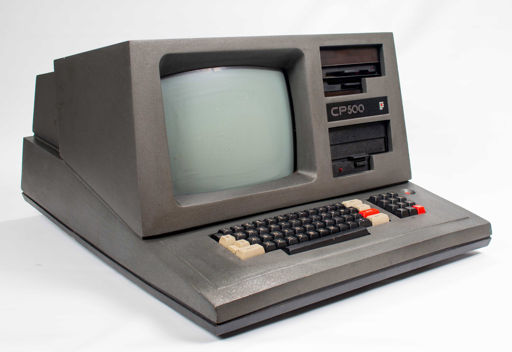
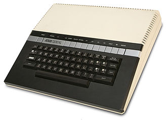
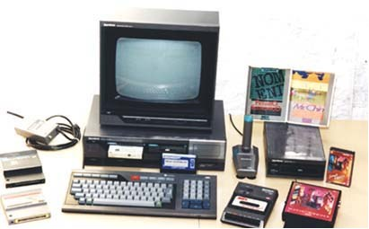
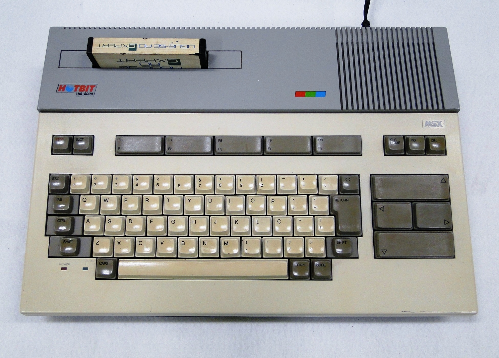
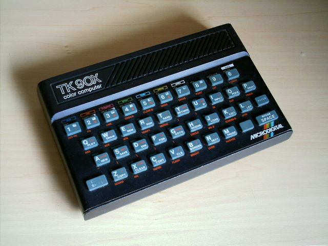
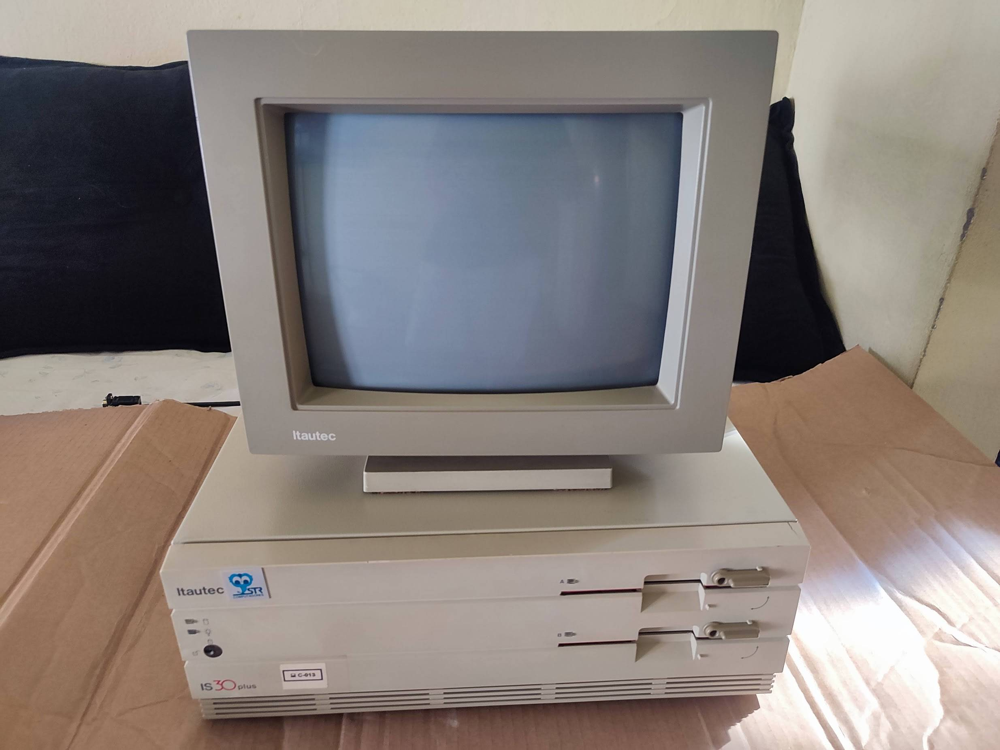

Nos anos 80, o Brasil viveu a chamada Era dos Clones, resultado direto da política de reserva de mercado. Como a importação de computadores era proibida, várias empresas brasileiras começaram a copiar modelos estrangeiros, criando versões nacionais com nomes diferentes, mas funcionamento parecido.
Esses “clones” permitiram que muitas pessoas e empresas tivessem acesso à computação pela primeira vez, impulsionando o ensino de programação e o surgimento de clubes de informática. Apesar de alguns modelos serem limitados e caros, essa fase foi essencial para formar uma geração de técnicos e programadores brasileiros, que aprenderam na prática como desmontar, adaptar e reconstruir tecnologia.
| Principais Clones de Computadores Brasileiros dos Anos 80 | ||||
|---|---|---|---|---|
| Imagem | Clone Nacional | Fabricante (Brasil) | Modelo Original | Ano |
 |
CP-500 | Prológica | TRS-80 Modelo III | 1982 |
 |
TK-2000 | Microdigital | Apple II Plus | 1984 |
 |
Gradiente Expert | Gradiente | Padrão MSX | 1985 |
 |
Sharp Hotbit | Sharp | Padrão MSX | 1985 |
 |
TK-90X | Microdigital | Sinclair ZX Spectrum | 1985 |
 |
Itautec IS 30 | Itautec | IBM PC XT | 1986 |